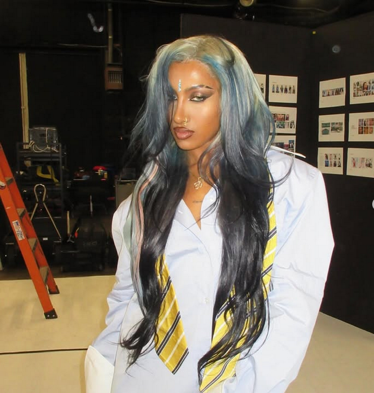

Media
22 frames from the archive
Katseye
A global pop group blending innovation, rhythm, and artistry, Lara's second stage for the same creative energy she brings to Misschief.



Lara Raj is a musician, innovator, and member of the global pop group Katseye. Blending artistry with technology, she creates immersive soundscapes that inspire and connect audiences worldwide.
She joined Katseye, an international girl group formed through a global talent competition by Hybe and Geffen Records, after being discovered through her song covers on social media. The group debuted with the EP Soft Is Strong and followed with Beautiful Chaos, earning international acclaim and their first VMA win.
Lara is openly queer, having come out during a Weverse livestream, where she reclaimed the term "half-fruitcake" to describe her identity. A passionate advocate for South Asian and LGBTQ+ representation, she draws inspiration from artists like Maitreyi Ramakrishnan and Avantika Vandanapu.
Beyond music, Lara has contributed to social causes, including appearing in Michelle Obama's Global Girls Alliance campaign in 2018, where she performed "Freedom" alongside the former First Lady. Known for her authenticity and hands-on creative process, she often produces music from her bedroom studio with her sister, Rhea Raj.
Listen on Spotify22 frames from the archive
A global pop group blending innovation, rhythm, and artistry, Lara's second stage for the same creative energy she brings to Misschief.